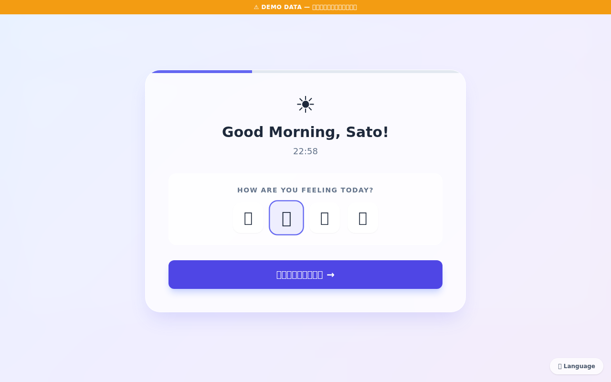
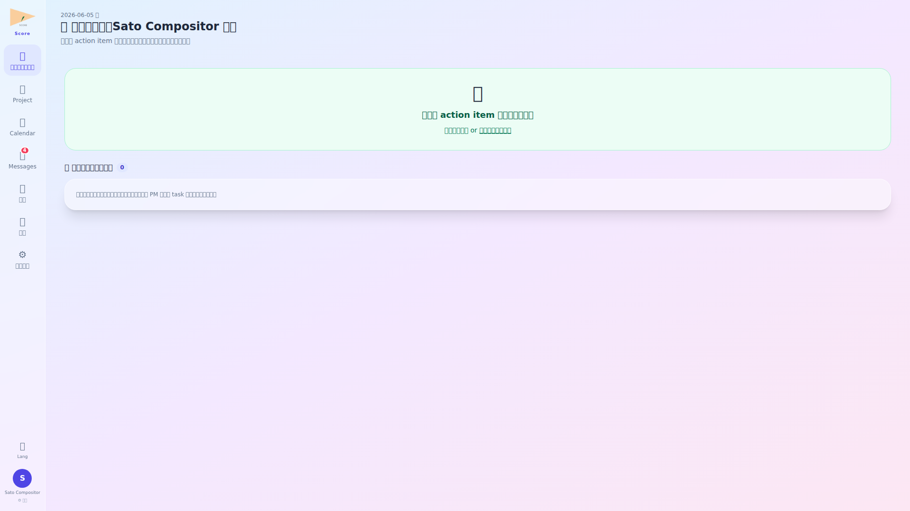
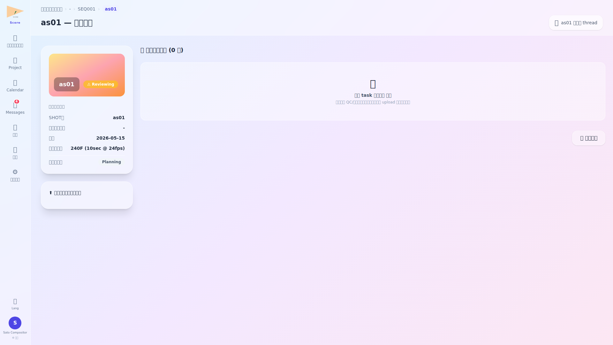
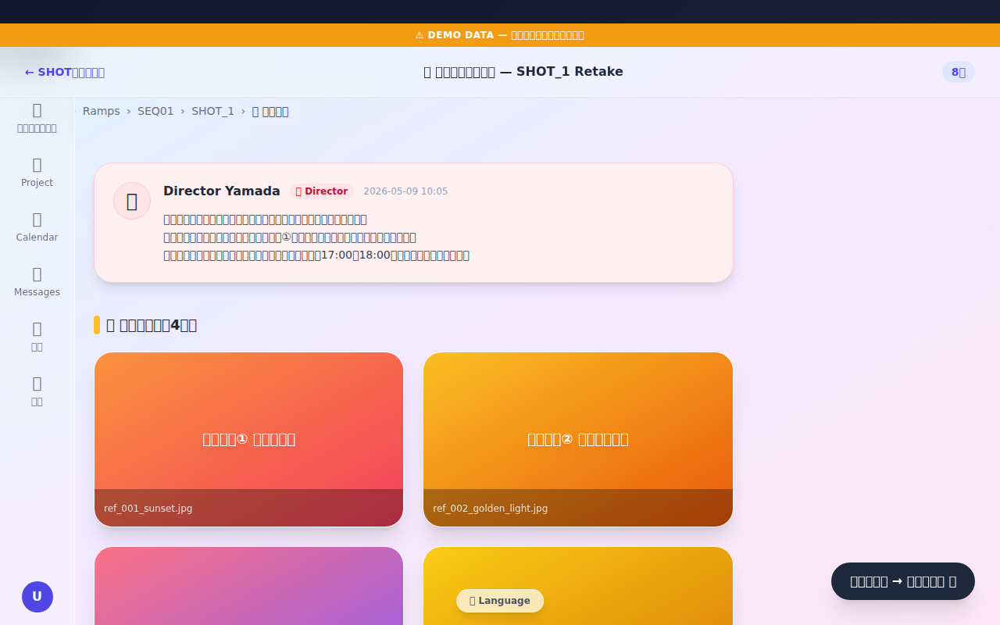
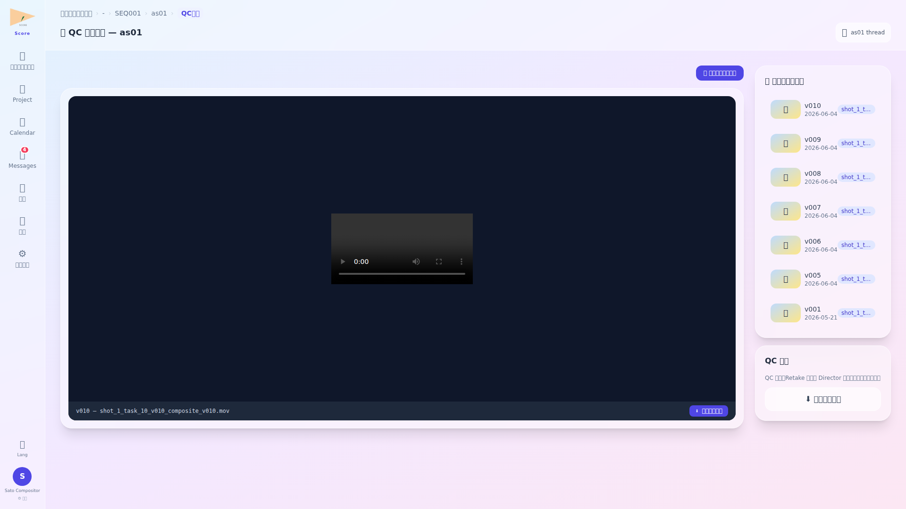
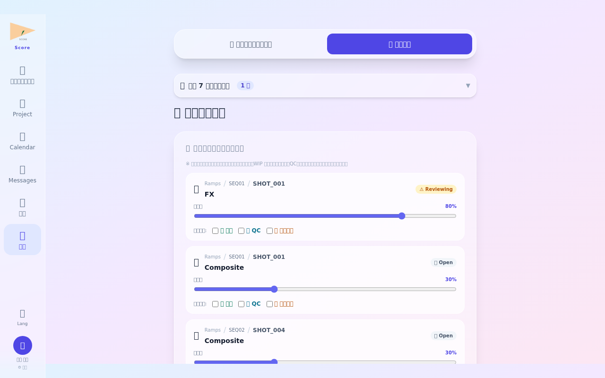
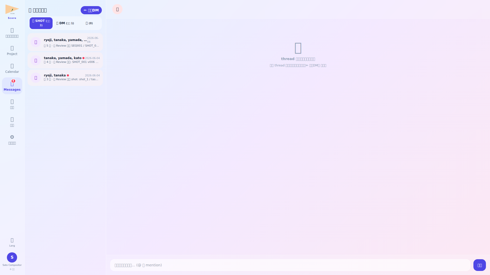
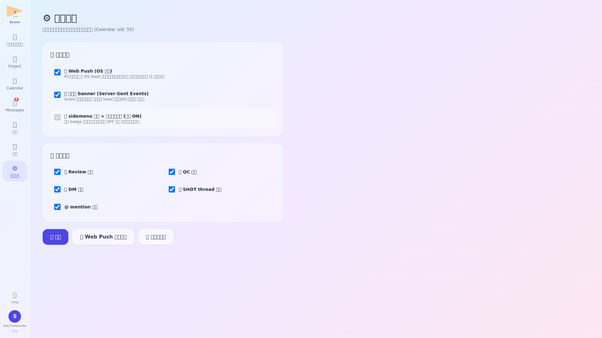

ログイン・朝のルーティン確認

ログイン後、ルーティン画面で本日の担当ショットと優先度を確認します。Compositor は複数ショットを並行して対応するため、朝のルーティン確認で当日の作業順序を決定します。
- リテイク指示が届いたショットは優先度「高」として上部に表示
- 本日締め切りのショットは赤色のカウントダウン表示あり
ダッシュボードで作業状況把握

ダッシュボードでは本日の予定 (Calendar 連動・自分が参加者として含まれる予定のみ表示)、未対応タスク、QC 依頼を一覧把握。各予定カードは プロジェクト名を最上段に大きく表示 + ミーティングリンク設定有の場合は 📹 mtg リンクへ 緑ボタンで一発参加可。参加者は氏名表示 (メールアドレスではない)。
- ステータス別のショット数をドーナツグラフで可視化
- 「今すぐ着手」ボタンでキューの先頭ショット詳細へ即遷移
ショット詳細・素材確認

ショット詳細画面では工程・QC ステータス・担当者・コメント履歴に加え、提出された Review/QC 依頼が 階層 title (project / SEQ / SHOT / task) で表示。本文中の ▶ QC ビューアで確認 緑ボタンを click すると Before/After QC 画面 (qc/{shot_id}) へ即遷移。提出物アセットには版数とアップロード履歴がリンク。
- 素材 upload はドラッグ&ドロップ対応 (最大 10GB / ファイル)
- upload 完了と同時に Lead・Director への通知が自動送信
リファレンス素材参照

リファレンス画面では Director・PM が共有した参照画像・動画・カラースウォッチを確認します。コンポジット作業の品質方向性を定める重要な素材であり、作業中は常時参照します。
- リファレンス素材はプロジェクト単位・ショット単位で整理されている
- コメント付きアノテーションを Director が追記している場合がある
QC ステータス確認・素材提出

QC ビューアでは提出された各バージョンを Before / After で並列比較。中央の ドラッグ可能な仕切り線 で 2 つの asset を 1 画面比較できる。画面上部に project/seq/shot/task の階層 title 表示、サイドバーで全 version 履歴とサムネール一覧 + click 切替。
- QC 結果は通知センターにも同時に届く
- リテイク指示に対する質問コメントをここから返信可能
カレンダー確認

カレンダーで担当ショットの締め切り日・試写日・チームミーティングを確認します。複数ショットの締め切りが集中している週は作業量を事前に調整し、Lead に相談します。
- ショット締め切りは自分担当のもののみ表示するフィルタあり
- 試写日は 5 日前からリマインダー通知が自動配信
退勤報告

退勤前に本日完了したショット数・upload した素材・翌日継続するショットを退勤報告にまとめます。作業が遅延している場合は備考欄に理由と見通しを記入します。
- 本日 upload した素材リストは自動でフォームに挿入される
- 退勤報告後に Lead へ自動通知が送信される
💬 メッセージ — SHOT 関係者 thread + 1対1 DM

一般業務担当 (Compositor / Animator / FX 等) として QC/Review 提出すると、自動で SHOT 関係者全員 (PM/Director/Lead/他工程担当) を含む thread が作成され、対象 shot の QC ビューアへの緑ボタンリンクと共に依頼本文が投稿される。
⚙️ 通知設定 — Push / SSE / 画面 badge の三重立て

Compositor は自身が出した Review 依頼の判定通知 (mention/Approved 等) が重要。Push 通知を ON にすることで離席中の判定通知も逃さず確認可。